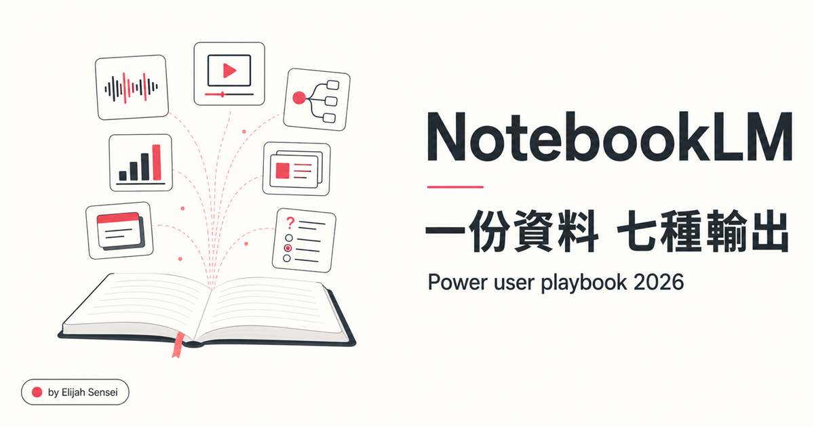

🤖 NotebookLM
難度 ★★☆☆☆
2026 最新功能 + 5 玩法
NotebookLM 2026 完整指南
一份資料七種輸出，從入門到 Power User
Studio 4-tile 升級 · Cinematic Video · Infographic 10 風格 · EPUB 上傳 · 5 個進階玩法
💡它到底解決什麼問題
你手邊有 30 個 PDF 想搞懂、有一段 5 萬字的逐字稿要消化、有 8 個競品官網要交叉分析。傳統做法是打開 ChatGPT 一份份貼，但 ChatGPT 會幻覺、會忘記前面講過什麼、會用它訓練資料的偏見覆蓋你的事實。
NotebookLM 是 Google 用 Gemini 3 做的「只根據你上傳資料」的 RAG 工作台。它不負責推理創新，它負責「壓縮你已經知道的資料」並把同一份資料變成 podcast、影片、心智圖、簡報、quiz、flashcard、報告 7 種不同形式。免費、繁中支援、不需訂閱。
🆕2026 七大新功能
1
Cinematic Video Overviews（沉浸深度影片）
不是普通的 narrated slides，是讓 Gemini 做數百個結構與風格決策的沉浸影片。畫面有流暢動畫、豐富視覺、節奏起伏。輸出格式直接適合 LinkedIn / X / 教學分享。
💡 一段 5 分鐘 Cinematic Video 在社群分享觸及率比文字文章高 5-10 倍，是 NLM 2026 最值得投資時間的功能。
2
Studio 4-tile 並排升級
右側 Studio 面板現在有 4 個獨立 tile：Audio Overviews / Video Overviews / Mind Maps / Reports。可以同時開多個、一邊聽 podcast 一邊看 mind map、同類型可存多個輸出。
💡 過去同 type 只能存 1 個的限制解除了。同一份 source 可以產 3 種不同角度的 Briefing Doc 互相對照。
3
Infographic 10 種預設風格手選
過去 infographic 只有 auto。現在可以從 10 種預設風格挑：Timeline、Comparison、Process Flow、Statistics、Hierarchy 等。視覺風格能配合品牌 / 議題調整。
4
EPUB 檔案上傳支援
過去只能上傳 PDF / Google Doc / 網址。現在 EPUB 直接吃。Kindle 買的書、O'Reilly 訂閱的技術書、自製電子書都能丟進去做 podcast。
💡 訂閱了書但沒時間看 → 丟 EPUB 進 NLM 產 Audio Overview → 通勤時聽完。學習效率拉滿。
5
Slide deck 匯出 PPTX
過去簡報只能匯出 PDF。現在可選 PPTX，落地後可以在 PowerPoint / Keynote 做最後微調。配合 2026/02 推出的「簡報單頁編輯」功能（用 prompt 改文字 / 圖片 / 圖表），整套簡報產線已經比 Gamma 等專業工具不差。
6
Flashcards / Quizzes 跨 session 進度保存
學習卡片可以標「Got it / Missed it」、洗牌、結算只練錯過的題目。Quizzes 結果也跨 session 保留，可以反覆練習弱點。NLM 從「資料整理工具」升級成「學習工具」。
7
Audio Overview 4 種模式
過去只有預設的雙主持人 Deep Dive。現在可選 Deep Dive（兩位深聊）/ Brief（單人 2-3 分鐘速報）/ Critique（兩位提批評建議）/ Default。Critique 模式拿來檢視自己的論文 / 提案非常有用。
💡 寫完報告 → 上傳 → 跑 Critique → 兩位 AI 主持人會直接點出邏輯漏洞和該補的論證。比叫朋友看快 10 倍。
⚖️NotebookLM vs ChatGPT vs Claude
這三個工具不是競爭關係，是分工關係。把 NLM 當 ChatGPT 用是錯誤定位。
| 場景 | ChatGPT / Claude | NotebookLM |
|---|
| 探索未知主題 | ✅ 適合（廣度推理） | ❌ 不適合（只看你的 source） |
| 壓縮大量已知資料 | 會幻覺、會忘 | ✅ 強項（RAG 鎖在 source 內） |
| 多媒體輸出 | 純文字 | ✅ Podcast / 影片 / 簡報 7 種 |
| 長期專案知識庫 | 對話 context 限制 | ✅ Notebook 永久保存 |
| 需要創意 / 寫作 | ✅ 強項 | ❌ 受 source 限制 |
| 學習新領域 | 看人格選 | ✅ Flashcards + Quiz 加分 |
🚀5 個 Power User 玩法
玩法 1 · 知識庫架構
Topical Authority Clustering（主題權威分群）
不要把所有資料丟一個 notebook。每個子主題開獨立 notebook，命名 主題 / 子主題。在 chat 裡引用其他 notebook 名稱，Gemini 能跨庫找關聯。一個專業領域的人應該有 5-10 個專屬 notebook，不是 1 個塞滿的雜物間。
💡 適合長期經營某個領域（如行銷、AI、投資）。資料隨時間累積，notebook 是你的外掛大腦。
玩法 2 · 突破 source 數限制
Note-as-Source 壓縮術
NLM 每個 notebook 有 source 數上限（免費 50 / Pro 300）。當你要處理超過上限的資料時：先丟一批 → 叫 NLM 整成 Briefing Doc 或 Study Guide → 把摘要存成 Note → Note 本身也可以當 source 用。等於你「壓縮」了 N 份原始 source 成 1 份濃縮 source。
💡 處理 100+ 份論文時這招必用。先分批產 5-6 份 Study Guide，最後合併成總綱。
玩法 3 · 雙系統協作
NotebookLM + Claude（MCP 連線）
NLM 管知識（RAG / 永久記憶 / source 鎖定），Claude 管推理（創意 / 寫作 / 跨庫思考）。透過 MCP 協議讓 Claude 直接存取你的 NLM notebook，等於把 Claude 的腦袋接上你的私人知識庫。
💡 我自己跑這個流程：所有客戶資料、競品分析、產業報告都在 NLM。Claude 寫文時透過 MCP 抓對應 notebook，不用每次重貼。
玩法 4 · 深度研究模式
Deep Research（2025/11 推出）
過去 NLM 只能讀「你給的」source。Deep Research 模式讓 NLM 自己去網路找補充資料、跨網域驗證、寫成研究報告。從 RAG 工具進化成 Agentic Researcher。
💡 適合做產業研究、競品掃描、學術 literature review。給一個關鍵字，回來一份 30 頁報告。
玩法 5 · 給粉絲拓展受眾
Public Notebook + Cinematic Video 雙投放
Notebook 設為 public share，連結直接放 Threads / Twitter。粉絲可以進去問問題（NLM 會用你給的 source 回答）。同時把 Cinematic Video 下載，配字幕剪 30-60 秒短影片發 Reels / Shorts。同一份資料兩個觸及路徑：深度族群（讀 NLM）+ 廣度流量（看影片）。
⚠️常見踩坑
❌ API 觸發 audio / video / slide_deck 大量失敗
✅ 用 NotebookLM Web UI 手動點 Generate 成功率 90%+。MCP API 觸發路徑跟 UI 觸發路徑不同，UI 比較穩。重要 artifact 別 100% 靠 API 自動化。
❌ 上傳 source 後立刻 generate artifact 會 fail
✅ Source 加進去後 NLM 端要處理 30-90 秒（embedding / 索引）。先在 chat 問一個簡單問題確認 source ready，再去 generate。
❌ Cinematic Video 卡在「processing」超過 30 分鐘
✅ 這是正常的。Cinematic 比一般 Video 慢 3-5 倍（畫面決策多）。中型主題抓 20-40 分鐘預期。重大會議簡報前一晚跑，不要當天才產。
❌ 中文 podcast 主持人用詞偏中國大陸（「視頻」「軟件」）
✅ 在 chat configure 階段明確指定「繁體中文 + 台灣口吻 + 用『影片』『軟體』不用『視頻』『軟件』」。NLM 會吃 instruction。
❌ Source 數超過上限就無法新增
✅ 用「玩法 2」的 Note-as-Source 壓縮術。或者開新 notebook，把舊 notebook 用 link reference 串起來。
📚延伸資源
🎧多媒體版本（NLM 自己生）
這份指南本身也丟進 NotebookLM 跑了一輪。下面是 NLM 自己用這份內容產的多媒體版本，你可以開公開連結直接問問題（NLM 會用本指南的 source 回答），或看它整理出來的架構心智圖。